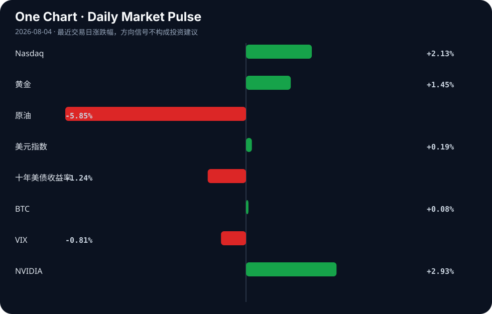

Daily Intelligence
2026-08-04｜Tuesday
Today’s Thesis｜今日一句话
AI 正在从“模型竞赛”转向“基础设施、交付与行业嵌入”的竞争，真正的分化不再只看谁能做出更强模型，而是看谁能把算力、产品、合规和行业流程连成闭环 [A1][A6][A11][A13]。
① Executive Summary｜30 秒
1. AI：今天最重要的信号不是某个单点模型突破，而是大厂继续加码 AI 基建、AI 工厂与落地场景，说明产业竞争重心正在向“可部署、可运维、可规模化”的供给侧迁移 [A6][A10][A11]。
2. 商业：从云厂商资本开支、AI ETF 表现到半导体与终端叙事，资金仍在围绕 AI 生态链再定价；同时，AI 手机、AI 产业政策与行业应用报道表明“从概念到流程”的商业化门槛仍未消失 [A10][A13][A20]。
3. 宏观：市场表格显示风险偏好并未消失，但黄金、美元指数、十年美债收益率同向偏强，意味着“风险资产回暖”与“金融条件偏紧”可以同时存在；这更像是对增长与通胀、降息与再通胀的拉锯定价，而不是单边情绪 [表格]。
② AI Daily
1) AI 基建继续成为主线
What Happened
多条来源都指向同一件事：海内外大厂继续密集加码 AI 基建，相关 ETF 标的指数上涨，说明资本市场仍在把“算力、云、数据中心、基础设施”视作 AI 扩张的核心承接层 [A6][A7][A10]。KED Global 报道称，Naver 将设立一家全资运营主体，管理 Nvidia-Brookfield 支持的 AI factories [A11]。
Why It Matters
这不是简单的“行业热度高”，而是 AI 价值链的重心在变化：模型能力越来越像必要条件，真正稀缺的是部署能力、供电能力、运维能力和资金组织能力。换句话说，AI 产业的竞争从“算法优胜”逐渐转到“基础设施密度 + 商业交付速度”的竞赛 [A10][A11]。
Second-order Effect
如果基建成为主线，受益顺序可能会从“模型叙事”进一步向“云、服务器、散热、电力、网络、机房运维”扩散。A10/A11 所反映的不是单点新闻，而是一个供给扩张信号：资本开支上升 → 基建订单增加 → 产业链收入确认滞后但持续 → 二级市场围绕龙头重新定价。
2) AI 从“能用”转向“能管、能控、能规模化”
What Happened
Hacker News 上出现了两个方向值得注意的材料：一是 AI code-reviewer “Bubo”，强调它能从 review comments 中学习；二是“给 AI agent rootless VPN access to 1k live servers”的实验，指向 agentic operations 的运维边界探索 [A2][A3]。同时，AI 基础设施的生产级运维问题也被直接摆上台面：开源 AI infra 在 production 中面临 cost、GPU availability、security、manageability 等问题 [A8]。
Why It Matters
这些材料共同说明，AI 的瓶颈已经不只是“模型会不会答”，而是“系统能不能被稳定托管”。代码审查、服务器访问、运维治理，这些都是把 AI 放进真实生产环境时必须跨过的控制门槛 [A2][A3][A8]。
Second-order Effect
当企业开始要求 AI 进入关键流程，真正被放大的不是“单次生成能力”，而是审计、权限、日志、评估、回滚等配套能力。AI 价值链因此会向“工具链、治理层、观测层”延伸；如果这些能力跟不上，AI 应用的扩张会被安全与管理成本反向约束 [A8][A13]。
3) 行业应用正在从终端叙事走向制度与场景约束
What Happened
材料中既有高通谈“技术创新与产业发展共进、推动 AI 技术快速落地” [A1]，也有“AI 手机：从合规放行到产业爆发仍面临多维度挑战” [A13]，还有 AI、STEM 课程扩展、AI 个人创新政策、AI 演员等更广泛的应用与社会议题 [A20][A23][A24]。
Why It Matters
这说明 AI 产业不再只比拼“有没有功能”，而是在比拼“能否进入既有制度、供应链和用户习惯”。尤其在终端侧，合规、体验、定价、生态协同都可能比技术演示更重要 [A1][A13]。
Second-order Effect
短期看，AI 应用会继续扩散；中期看，谁能把 AI 嵌入标准流程，谁就更容易拿到持续收入。反过来，若合规或体验无法闭环，AI 终端可能停留在“可展示、难规模”的阶段 [A13][A20]。
③ Business Daily
科技
云厂商集中加码资本支出、AI ETF 上涨、AI 基建被反复提及，说明科技行业今天的核心变量仍是“资本开支如何转化为可见收入” [A6][A10][A11]。这类新闻的共同点是：它们都不是纯粹的概念炒作，而是在讨论真实资产、真实部署和真实订单。
金融
市场层面，Nasdaq、VIX、NVIDIA 同向支持风险偏好改善，但十年美债收益率和美元指数同步走强，意味着权益市场的乐观并未完全摆脱更紧的金融条件 [表格]。这对高估值科技股尤其重要：估值扩张并不等于融资环境轻松。
能源
原油下跌、黄金上涨，提示市场并未形成一致预期：一边是对通胀压力缓解的交易，一边是对避险/通胀对冲的需求 [表格]。这类背离通常意味着投资者仍在为政策、地缘和增长前景分散定价，而非接受单一宏观叙事。
医疗
BWXT 出售医疗业务给 Nordic Capital [B23]。在缺少更多细节时，能确认的是医疗业务在公司组合层面仍是可被拆分、重组和资本化的资产类别 [B23]。这类交易通常反映企业在聚焦主业或优化资本结构，但具体动机与估值逻辑需回到原文验证。
④ Macro Observation｜机制分析
世界正在发生什么？ 从材料与市场信号看，世界处于“AI 资本开支扩张”与“宏观金融条件偏紧”并存的阶段：一方面，大厂持续投入 AI 基建、AI 工厂和行业应用 [A6][A10][A11]；另一方面，美元、长端利率和黄金同步偏强，显示市场在对增长、通胀与政策路径进行多重对冲 [表格]。
为什么发生？ 其一，AI 进入规模化部署阶段后，竞争焦点自然从模型参数转向基础设施密度、交付速度和运维治理 [A8][A11]。其二，宏观层面仍存在不确定性，市场没有足够把握相信“增长放缓就一定带来快速宽松”，因此风险资产上涨的同时，避险资产和美元也能获得支撑 [B1][B6][B12]。
资本如何流动？ 当前资金更像是在两条主线上流动：第一条是 AI 相关的真实资本开支链条，流向云、GPU、数据中心、AI 工厂和产业链配套 [A6][A10][A11]；第二条是宏观对冲链条，流向黄金、美元和长久期收益率更高的资产定价 [表格]。这两条线并不矛盾，反而可能形成反身性：AI CAPEX 上升 → 科技权重和产业链估值抬升 → 市场对增长预期更乐观，但若长端利率继续上行，估值又会被反向压制。
接下来关注什么？ 第一，AI 基建投入能否转化为更清晰的收入兑现节奏；第二，终端 AI 与行业 AI 的合规、成本和管理瓶颈是否缓解 [A13]；第三，长端利率和美元是否继续抬升，从而压缩高估值成长股的估值弹性 [表格]。如果这三者同时发生，市场将从“讲故事”进一步进入“看交付”的阶段。
⑤ Signal Dashboard
| 指标 | 最新值 | 今日 | 信号 |
|---|---|---|---|
| Nasdaq | 25,373.85 | ↑ +1.00% | 风险偏好改善 |
| 黄金 | 4,112.70 | ↑ +1.57% | 避险/通胀对冲增强 |
| 原油 | 80.95 | ↓ -4.39% | 通胀压力缓解 |
| 美元指数 | 100.02 | ↑ +0.22% | 金融条件偏紧 |
| 十年美债收益率 | 4.75 | ↑ +1.76% | 成长估值承压 |
| BTC | 63,637.86 | ↑ +0.25% | 中性 |
| VIX | 15.99 | ↓ -6.44% | 风险偏好改善 |
| NVIDIA | 200.75 | ↑ +2.93% | 风险偏好改善 |
⑥ Deep Insight
今天最值得警惕的，不是“AI 仍然很热”这件已经不新鲜的事，而是 AI 热度正在悄悄换引擎：从“模型叙事”切换到“基础设施叙事”，再切换到“制度化交付叙事”。这三个阶段看似连续，实则对应完全不同的利润分配方式。模型阶段的赢家通常更集中，靠技术领先和品牌溢价吃到超额关注；基础设施阶段的赢家更偏向拥有资本、能源、算力和供应链组织能力的企业；而交付阶段的赢家则是能把 AI 嵌入工作流、形成可审计、可复用、可收费流程的公司 [A6][A8][A11][A13]。很多人会把今天看到的 AI 基建新闻理解成“继续扩张”，但更深一层的信号是：行业已经进入用真实资本约束来筛选真需求的时刻。
一个容易被忽略的视角是，AI 的“普及”并不天然等于“利润扩散”。恰恰相反，普及早期往往伴随利润更集中，因为上游卖铲子者先获益，下游应用端要先承担集成、合规、算力和组织改造成本。A8 提到生产级开源 AI infra 的难点，A13 说 AI 手机从合规放行到产业爆发仍有多维挑战，这些都说明：当 AI 进入真实组织，最大的约束不是功能按钮，而是治理结构。谁能把权限、审计、容错、观测这些“无聊但关键”的层面商品化，谁就更可能把热度变成持续收入。反过来，如果市场只看演示效果而忽视运维与合规成本，估值会在“想象扩张”与“兑现延迟”之间反复摆动。
反方观点也成立：也许今天的基建加码只是资本周期中的一段正常扩产，未必意味着长期利润重分配；也许终端与行业应用最终会像过去很多技术浪潮一样，在充分竞争后迅速商品化，导致上游和下游一起压毛利。这个反方并不弱。证伪条件很明确：如果未来 1—2 个季度里，AI 基建投入无法带来更清晰的收入增速、毛利改善或稳定续约，而只是继续推高折旧、能耗与融资需求，那么“基础设施主导长期价值”的判断就需要被修正。相反，如果 AI 相关支出开始稳定映射到云收入、企业软件渗透率或行业流程改造效率，今天看到的这些基建和运维信号就不是短期情绪，而是产业结构变化的早期证据。
⑦ Tomorrow Watch
1. 关注 AI 基建、云厂商或 AI 工厂相关公司是否继续释放资本开支或合作更新。
2. 验证 AI 手机、AI 终端或行业应用是否出现更多合规/落地细节，而不是只停留在概念表述。
3. 追踪长端利率与美元指数是否继续上行，判断金融条件是否进一步收紧。
4. 比较黄金、原油与 VIX 的同日方向，观察市场是在交易通胀、避险还是增长担忧。
5. 留意任何新的生产级 AI 运维、权限治理、评测或安全相关报道，判断“能用”是否真正转向“能管”。
⑧ One Chart

这张图更适合被理解为“同一时点下多资产信号的切面”，而不是单一趋势结论。它显示风险偏好、避险需求与金融条件可能同时变化，因此解读时要看组合，不要只看某一个方向。
⑨ Quote of the Day
“The future is already here — it is just not evenly distributed.”
— William Gibson
中文理解：未来其实已经出现，只是分布在少数地区、公司和人群中，还没有扩散到所有地方。
Why it matters today：这句话不是装饰，而是今天观察 AI、商业和宏观变化时的一个思考框架：先看机制，再看价格；先看约束，再看叙事。
⑩ Action Items｜今天值得思考什么
1. 关注 AI 基建新闻背后，究竟是需求扩张还是资本开支前置。
2. 验证 AI 终端与行业应用的真正阻力，是技术不足还是合规与组织改造。
3. 比较风险资产上涨与长端利率上行是否可以并存，以及能持续多久。
4. 追踪黄金、美元、原油同时波动时，市场到底在定价哪一种宏观情景。
5. 思考 AI 价值链中，哪些环节最可能从“热度资产”变成“现金流资产”。
信息边界
本期仅使用用户提供的 AI 与商业/宏观来源链接及摘要，未回溯原文全文核验细节；部分来源为二手聚合，关键判断需回到原始报道确认。市场表格视为最近交易日数据，但未提供具体交易所时点与收盘/盘中属性，不能据此推断更长周期趋势。对未在材料中明确呈现的事实，一律视为未知，不作补充。
Sources
AI
- A1：高通孟樸：技术创新与产业发展共进 推动AI技术快速落地 - 集微网 — Google News · AI 中文
- A2：Bubo: AI code-reviewer that learns from review comments — Hacker News · AI
- A3：We gave an AI agent rootless VPN access to 1k live servers — Hacker News · AI
- A6：海内外大厂密集加码AI基建，人工智能板块迎来催化，科创创业人工智能ETF易方达（159140）标的指数涨近6% - 新浪网 — Google News · AI 中文
- A7：海内外大厂密集加码AI基建，人工智能板块迎来催化，科创创业人工智能ETF易方达（159140）标的指数涨近6% - 搜狐网 — Google News · AI 中文
- A8：Ask HN: How are you operating OSS AI infrastructure? — Hacker News · AI
- A10：海内外云厂商集中加码资本支出，人工智能ETF易方达（159819）标的指数涨3.5% - 搜狐网 — Google News · AI 中文
- A11：Naver to establish wholly-owned operator of Nvidia-Brookfield-backed AI factories - KED Global — Google News · AI
- A13：特别报道丨AI手机：从合规放行到产业爆发仍面临多维度挑战 - 新浪网 — Google News · AI 中文
- A20：人工智能OPC政策红利持续释放 激活个体AI创新原生活力 - zqrb.cn — Google News · AI 中文
- A23：AI, STEM curriculum piloted in Bastrop ISD expands statewide - Community Impact — Google News · AI
- A24：AI演员要主演电影了 - 新浪网 — Google News · AI 中文
Business & Macro
- B1：Commerce Department begins Budget consultations with industry amid global trade uncertainty - BusinessLine — Google News · Global Economy
- B6：RBI Monetary Policy Review: Expectations Ahead of Aug 5 Meeting - whalesbook.com — Google News · Markets Policy
- B10：中央政治局会议定调房地产：筑牢屏障，稳住市场 - news.10jqka.com.cn — Google News · 行业
- B11：Yuan Edges Lower Against USD As PBOC Sets Central Parity At 6.7 - BusinessToday Malaysia — Google News · Markets Policy
- B12：Dollar Steadies as Markets Assess Fed Outlook - TradingView — Google News · Markets Policy
- B23：BWXT Selling Medical Business to Nordic Capital in Transaction Valued at up to $800 Million - Business Wire — Google News · Technology Business